（開場前）這是一份尚未發表的稿件，數字以最終版本為準。
臉孔辨識與吸引力評價的一致性，受對該族群的接觸經驗影響。
CNN 遷移學習已能高度擬合平均評分；一旦跨族群掉分，常被直接稱為「演算法偏誤」或「演算法版的 ORE」。
各位老師、同學好。今天分享的問題是：當深度學習模型學會預測人臉吸引力評分，它學到了什麼？面對不同族群的臉孔，它的預測和內部表徵又怎麼變化？
人類研究裡有熟悉的異族效應：對較少接觸的族群，臉孔辨識比較差，吸引力評價的一致性也比較低。電腦視覺領域則大量用 CNN 和遷移學習預測吸引力評分，在公開資料集上已經能達到很高的相關。
但多數研究只看輸出端的分數。一旦族群之間出現落差，很容易直接說成「演算法有偏見」或「重現了異族效應」。這個推論少了一步：輸出變差，是網路裡真的沒有另一群臉孔的相關資訊，還是最後的讀出沒有用對？我們用逐層線性探針，把這兩件事分開來看。
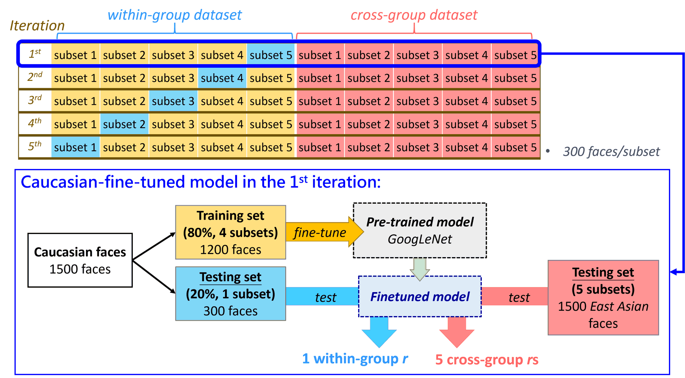
SCUT-FBP5500 中資料集標記為 Caucasian 與 East Asian 各 1,500 張，依評分分布配對；以特徵點擬合橢圓遮罩，只留內部臉孔。評分全部來自 60 位年輕亞洲評分者。
Cau-FT 只用 Caucasian 臉微調；EA-FT 只用 East Asian 臉微調；Non-FT 未微調。輸出層改為單一數值迴歸。
17 個節點的活化值 → 稀疏隨機投影 → 線性 SVR（留一法），讀出評分的相關 r。
整個流程以 3 個資料切分（seed 14、28、42）重複；圖中數字以 seed 28 為主。
資料來自 SCUT-FBP5500。我們依評分分布做分層抽樣，取資料集標記為 Caucasian 與 East Asian 的臉各 1,500 張，兩組評分分布對齊。再用 MediaPipe 的臉部特徵點擬合橢圓遮罩，去掉髮型、衣著和背景，只留內部臉孔。所有評分都來自 60 位年輕亞洲評分者，這點等一下解讀時很重要。
模型是 ImageNet 預訓練的 GoogLeNet，輸出層換成單一數值的迴歸。三種條件：只用 Caucasian 臉微調的 Cau-FT、只用 East Asian 臉微調的 EA-FT，以及沒有微調的 Non-FT。
左邊是交叉驗證設計：每一輪用四份訓練、一份做同群測試，再拿另一群的五份做跨群測試。內部表徵的部分，我們在 17 個節點抽活化值，用稀疏隨機投影降維，再用線性 SVR 以留一法解碼評分。整個流程用 3 個資料切分重複。
同群 約 .72–.73 → 跨群 .22（Cau-FT）、.41（EA-FT）
同群在 ±.035 內；跨群高估 +.08、+.075（三個切分 +.05 至 +.12）
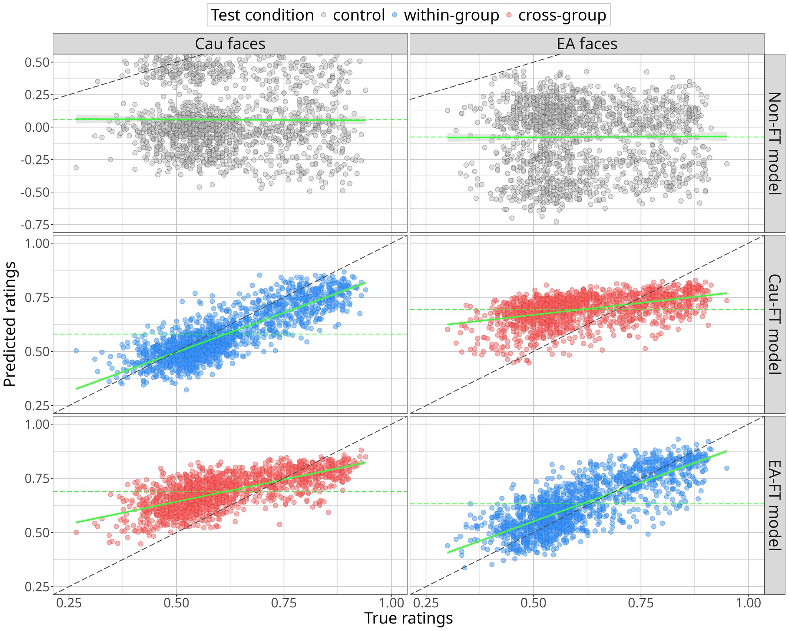
先看輸出端。兩個模型在自己訓練的那一群上，相關約 0.86 到 0.87；換到另一群就明顯下降，而且不對稱：Cau-FT 預測 East Asian 臉只剩約 0.43，EA-FT 預測 Caucasian 臉還有約 0.65。三個資料切分都一樣，15 個 iteration 全部是同群高於跨群。
右邊的散布圖顯示，跨群預測的迴歸線變平，斜率從約 0.7 降到 0.22 和 0.41；預測分數的分散程度變小，平均還整體往上偏。論文把這個型態稱為「預測範圍收窄」，但這只是描述性的標籤，迴歸效應、校準誤差都可能產生類似的圖形，我們沒有把它當成一個機制。灰色那一列是沒訓練過的輸出層，不是真正的基準。
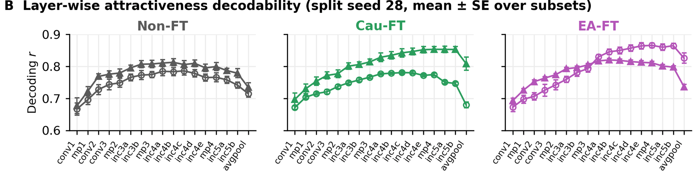
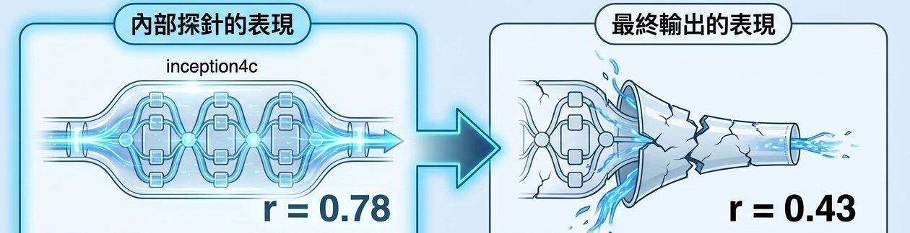
跨群探針 .78–.82，遠高於同一模型輸出的 .43–.65；未微調的 Non-FT 中層也有約 .8。
模型是不是「看不懂」另一群的臉？線性探針的答案是否定的。中間層對另一群的評分仍可讀出 0.78 到 0.82，遠高於同一個模型輸出的 0.43 到 0.65。連從沒看過臉孔評分的 Non-FT，中層也能讀到約 0.8。
要提醒的是，探針用了該群的評分來訓練，所以這是可讀資訊的上限；它能排除「資訊不存在」，但不代表模型的輸出真的用了這些資訊。跨群落差至少有一部分出在讀出端。
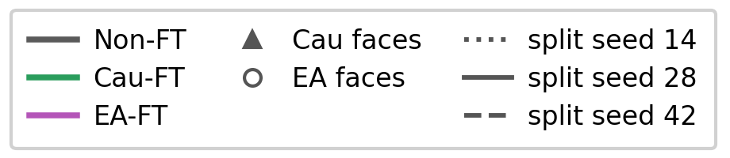
吸引力：輸出跨群 r 下降 .2–.4
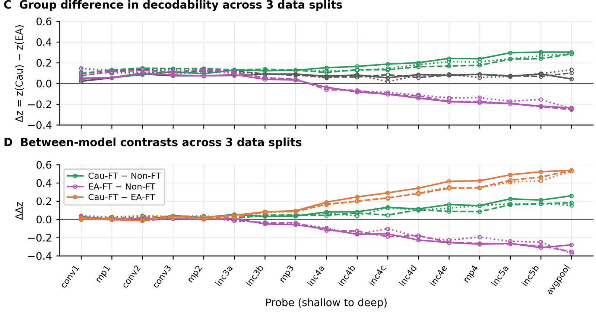
性別分類：輸出跨群 AUC 只降 .02–.04
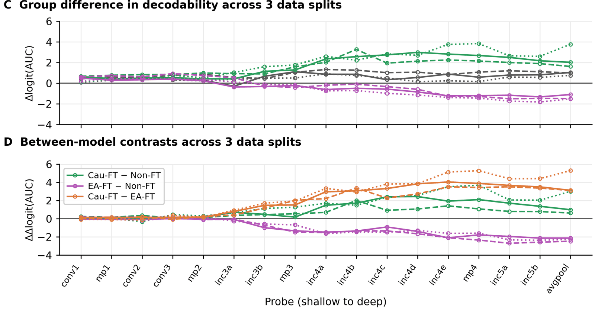
左圖是兩群可解碼性的差距，正值代表 Caucasian 臉比較好讀。Non-FT 有小幅 Caucasian 優勢，但大小隨資料切分而變。Cau-FT 往深層拉大這個差距，主要在晚層；EA-FT 則在 inception4a 翻轉，三個切分都一樣。
右圖是性別分類的對照，用同樣的影像、切分與網路。性別在輸出端幾乎完全跨群轉移，AUC 只掉 0.02 到 0.04，但內部的分歧型態和吸引力很像，只是翻轉提早到 inception3a、3b。所以這個層級分歧反映的是「用哪一群微調」，不是吸引力特有的，也不能用來預測輸出能轉移多少。性別的數值接近天花板，兩張圖的大小不能直接比。
最後談推論的界線。第一，輸出端的跨群失敗，不能直接等同內部表徵有缺陷，也不宜叫做演算法的異族效應。
第二，評分全部來自一群年輕亞洲評分者，標籤本身帶有文化脈絡；跨群誤差可能混合了影像統計差異、微調權重差異和標籤特性，目前的設計分不開。
第三，這是單一架構、單一資料集的描述性探針分析，不能證明因果，也不能推到人類審美的普遍階層。吸引力分數沒有客觀真值，這類模型不應該用在任何實際的社會決策上。
帶走的一句話：稽核模型的族群偏誤，輸出表現和內部可讀資訊要分開評估。謝謝大家。
預訓練的通用視覺特徵，本來就和這份資料的平均評分共變。
連第一層 conv1 就有 .63–.71，代表有相當部分可能來自亮度、膚色、紋理等低階影像統計；微調只把自己那一群提高到 .85–.87。
回答重點：通用特徵已經帶有和評分共變的資訊；conv1 就有約 0.7，低階影像統計可能占很大一部分。具體是哪些特徵，本研究沒有檢驗。
三個切分都是 Cau-FT 掉得比較多（跨群 r .43–.45，EA-FT .64–.65），但目前無法歸因到單一來源：
要分開這些因素，需要多個評分者族群交叉評分同一批臉孔。
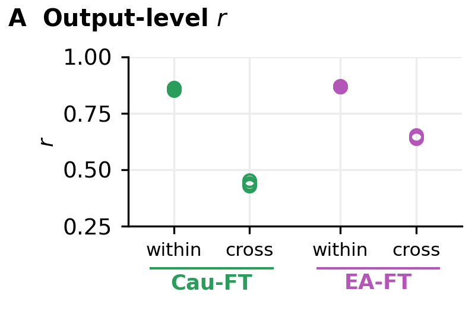
回答重點：不能單純歸因於演算法；評分者族群、影像統計、預訓練特徵的基線差異都可能有貢獻，設計上無法分離。
它把兩件事拆開：性別在輸出端幾乎完全跨群轉移（跨群 AUC .959–.976），內部卻出現同樣型態的分歧。所以層級分歧是群別微調的痕跡，不是吸引力專屬的特徵。
更乾淨的對照：用特徵點算出的客觀連續指標（如臉寬高比）當目標。
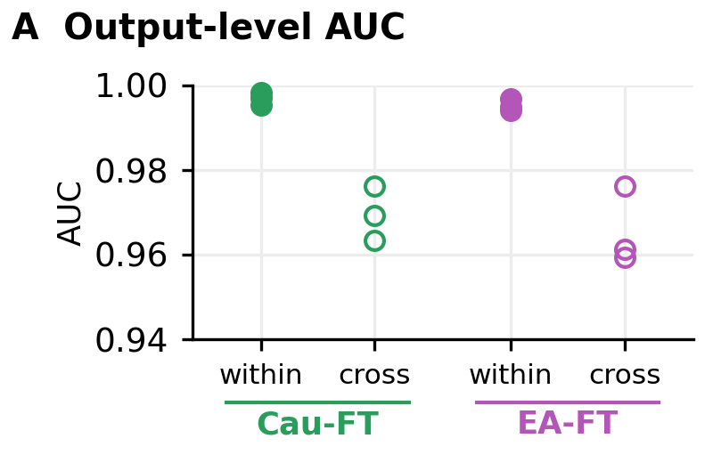
回答重點：把輸出泛化和內部分歧拆開。但要承認天花板與任務差異的限制，不宜說兩者「完全相同」。
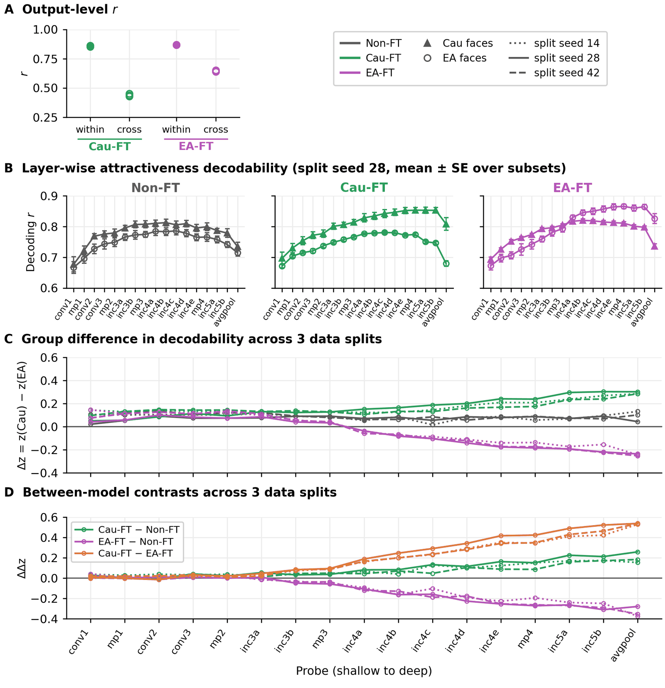
(A) 輸出端 r；(B) 各層解碼 r（seed 28）；(C) Δz = z(Cau) − z(EA)，三個切分；(D) 模型間對比 ΔΔz。
各層 permutation test 因臉孔與模型重複使用，作者視為探索性；主要依據是三個切分的一致性。
附錄：完整的圖 3，回答細節問題時用。
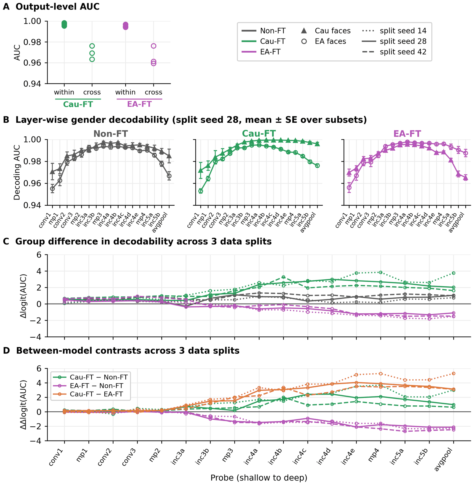
(A) 輸出 AUC；(B) 各層解碼 AUC（seed 28）；(C) Δlogit(AUC)；(D) 模型間對比。
截斷網路（只保留到 inception4c）的結果只在內文報告：吸引力的翻轉點提早到 inception3b，性別大致不變。
附錄：完整的圖 4，以及截斷網路的補充說明。